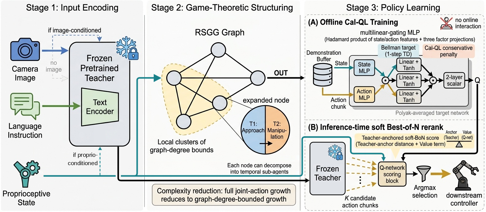
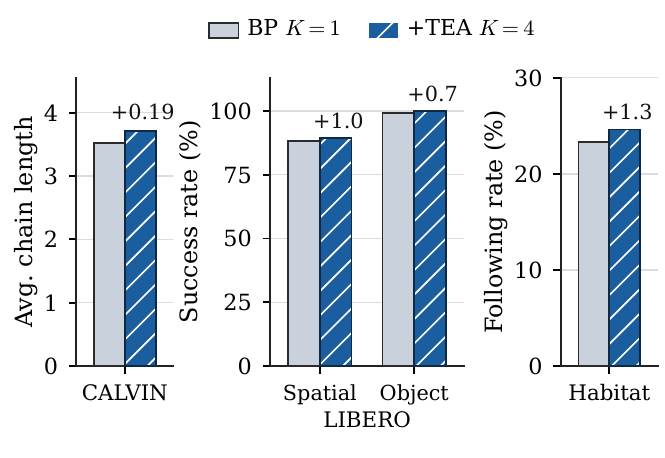
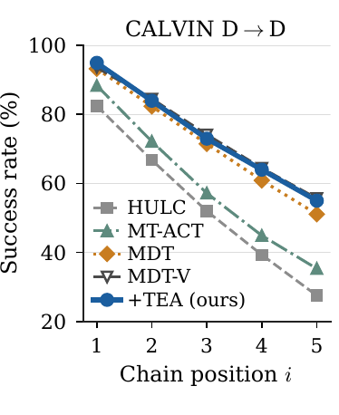
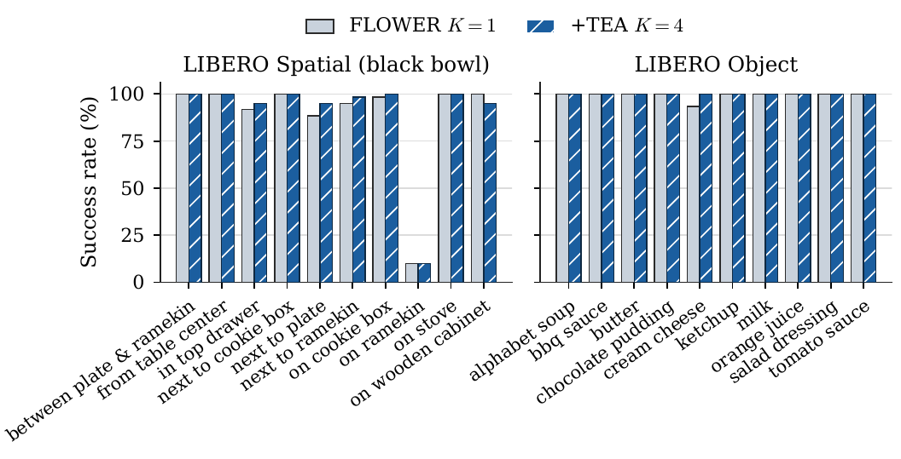
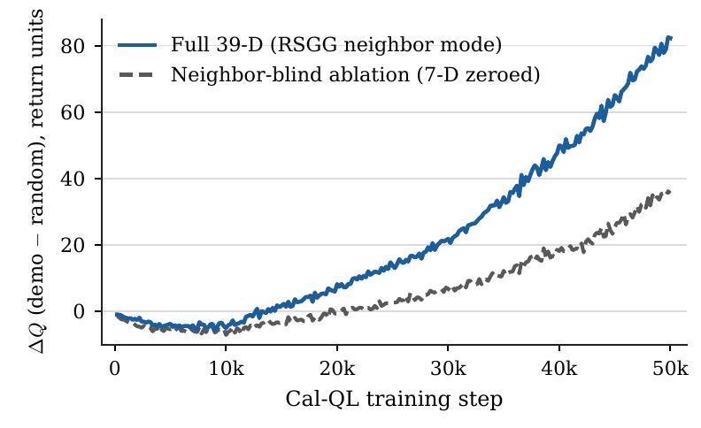
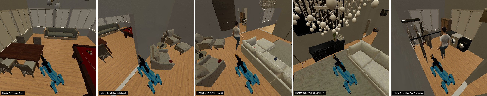
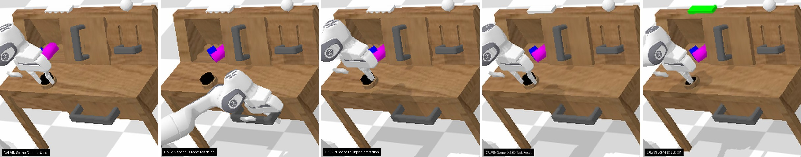
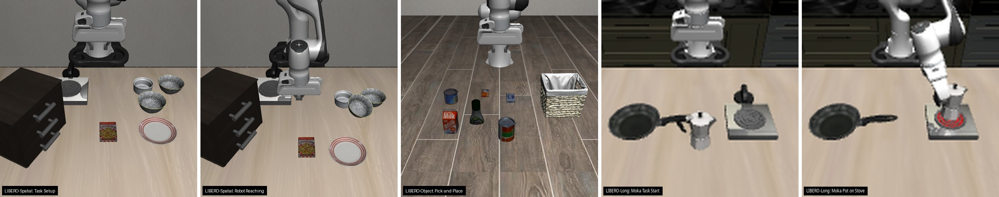

TEA: Trustworthy Embodied Agents via Value-Guided Reranking of Behavior Priors
Architecture Overview
TEA pairs a frozen pretrained Behavior Prior (BP) with a compact offline-trained multilinear critic that reranks a small batch of BP candidates at deployment. No parameter of the prior is fine-tuned, and every executed action is a sample from the frozen prior.

Figure 1 — TEA Overview. Stage 1: raw camera images and language instructions feed only the frozen BP (“teacher”), which also receives proprioception if it is conditioned on it (dashed); the critic receives a compact state vector $s$. Stage 2: Robust Stochastic Game Graph (RSGG) over interacting agents (temporal sub-agents are conceptual only). Stage 3: (A) offline Cal-QL training of the multilinear Hadamard critic; (B) inference-time Soft Best-of-$N$ reranking across $K=4$ frozen BP candidates (plus anchor on LIBERO and Habitat).
Stage 1 · Input Encoding
Raw pixels and text go exclusively to the frozen prior (MDT-V, FLOWER, or DD-PPO). The critic reads only a compact state $s \in \mathbb{R}^{d_s}$: CALVIN ($d_s{=}39, C{=}10$), LIBERO ($d_s{=}15, C{=}1$), Habitat ($d_s{=}39, C{=}1$).
Stage 2 · RSGG Graph Structure
Each agent’s critic conditions only on local graph neighbors, $O(n|\mathcal{A}|^{d+1})$ instead of $O(|\mathcal{A}|^n)$. In Habitat 3.0 ($n{=}2, d{=}1$), the partner humanoid’s 7-D features enter the robot critic’s state.
Stage 3 · Trustworthy Policy Extraction
(A) Offline Cal-QL training of the multilinear Q-network with zero online interaction. (B) Anchored Soft Best-of-$N$ reranking selects among $K{=}4$ frozen prior samples at runtime without optimizing against the critic.
Abstract
Method & Architecture Details
All manipulation critics share the multilinear-gating ActionChunkQNetwork architecture, while Habitat uses a four-member QEnsemble.
$O(R(d_s + C d_a) + M R^2)$ parameters ($M{=}3$ linear-$\tanh$ factors, rank $R{=}512$ on manipulation and $R{=}256$ on Habitat).
Deterministic anchored rule ($\alpha{=}2, \sigma{=}0.2$ on LIBERO & Habitat; hard $Q$-argmax on CALVIN) scoring $K{=}4$ BP candidates in $O(KMR^2)$ critic cost per replanning step.
| Hyperparameter | CALVIN | LIBERO (per suite) | Habitat 3.0 |
|---|---|---|---|
| Frozen BP | MDT-V (mdtv-1-d) | FLOWER (flower_libero) | DD-PPO (social_nav) |
| State dim. $d_s$ | 39 (15 prop + 24 scene) | 15 (EE + gripper + joints) | 39 (7 neighbor + 32 depth) |
| Action dim. $d_a$, chunk $C$ | 7, 10 | 7, 1 | 2, 1 |
| Rank $R$, projections $M$ | 512, 3 | 512, 3 | 256, 3 (4-ensemble) |
| Critic parameters | 1.29M | 1.26M | 4 × 0.37M |
| Cal-QL weight $\lambda$ | 0.5 | 0.5 | 0.01 |
| Adam steps / batch | 50,000 / 64 | 50,000 / 64 | 50,000 / 256 |
Paired Same-Checkpoint Benchmark Results
Every benchmark compares the exact same frozen Behavior Prior checkpoint ($K{=}1$) against itself plus TEA reranking ($K{=}4$) on identical evaluation streams. Published baselines serve as external context only; none of the single-suite or benchmark differences is claimed as statistically significant.


D per-position chain success from 1/5 to 5/5" />1. CALVIN D→D Long-Horizon Chains (MDT-V Prior)
Hard Q-argmax · 100 paired chains
Same-checkpoint mdtv-1-d rerun reaches 3.52 avg. chain length ($K{=}1$, 100 chains); adding TEA raises average length to 3.71 (+0.19, exceeding published MDT at 3.59). Published baselines use 1,000 chains and are not directly comparable to the 100-chain paired runs.
| Method | 1/5 (%) | 2/5 (%) | 3/5 (%) | 4/5 (%) | 5/5 (%) | Avg. Chain Length |
|---|---|---|---|---|---|---|
| GCBC (published, 1k) | 64.7 | 28.4 | 12.2 | 4.9 | 1.3 | 1.11 |
| MCIL (published, 1k) | 76.4 | 48.8 | 30.1 | 18.1 | 9.3 | 1.82 |
| HULC (published, 1k) | 82.5 | 66.8 | 52.0 | 39.3 | 27.5 | 2.68 |
| LCD (published, 1k) | 88.7 | 69.9 | 54.5 | 42.7 | 32.2 | 2.88 |
| MT-ACT (published, 1k) | 88.4 | 72.2 | 57.2 | 44.9 | 35.3 | 2.98 |
| MDT (published, 1k) | 93.3 | 82.4 | 71.5 | 60.9 | 51.1 | 3.59 |
| MDT-V (published, 1k) | 93.7 | 84.5 | 74.1 | 64.4 | 55.6 | 3.72 |
| MDT-V $K=1$ (our rerun, 100 chains) | – | – | – | – | – | 3.52 |
| MDT-V + TEA $K=4$ (ours, 100 chains) | 95.0 | 84.0 | 73.0 | 64.0 | 55.0 | 3.71 (+0.19) |
2. LIBERO Manipulation Suites (FLOWER Prior)
Soft BoN (α=2, σ=0.2) · K=4 + anchor| Method | Spatial (%) | Object (%) | Long (libero_10) (%) |
|---|---|---|---|
| OpenVLA (published) | 84.7 | 88.4 | 53.7 |
| Octo, fine-tuned (published) | 78.9 | 85.7 | 51.1 |
| Diffusion Policy (published) | 78.3 | 92.5 | 50.5 |
| FLOWER $K=1$ (our rerun) | 88.3 (530/600) | 99.3 (596/600) | 94.3 |
| FLOWER + TEA $K=4$ (ours) | 89.3 (536/600) | 100.0 (600/600) | 91.7 |
On LIBERO-Object ($6\text{ seeds}\times 10\text{ tasks}\times 10\text{ eps} = 600$), TEA reaches 60/60 on all 10 tasks (fixing all 4 baseline failures on cream cheese, 56→60; McNemar $p{=}0.125$). On Spatial, TEA improves 4 tasks, ties 5, and drops 1 on wooden cabinet. On Long, scoring only the first action ($C{=}1$) of 10-step flow chunks drops near the prior ceiling.

3. Habitat 3.0 Multi-Agent Social Navigation (DD-PPO Prior)
RSGG n=2, d=1 · 5 seeds × 30 eps (n=150)| Arm | Finding $S\uparrow$ | Following $F\uparrow$ | Collision CR $\downarrow$ | Encounter $T_{\text{enc}}\downarrow$ |
|---|---|---|---|---|
| DD-PPO $K=1$ | 0.68 ± .04 | 0.23 ± .02 | 0.55 ± .04 | 557 |
| DD-PPO + TEA $K=4$ | 0.69 ± .04 | 0.25 ± .02 | 0.52 ± .04 | 502 |
| w/o RSGG neighbor block ($n{=}60$) | 0.67 ± .06 | 0.18 ± .03 | 0.50 ± .06 | 603 |
All 4 metrics move favorably over the frozen prior (differences within 1 SE). Zeroing the 7-D humanoid RSGG block cuts following rate $F$ from $0.26 \to 0.18$ and slows encounter from $540 \to 603$ steps (matched 2 seeds, $n{=}60$), while reducing offline Cal-QL demo-vs-random margin by 2.3× ($82.3$ vs. $35.6$ return units at 50k steps).

Simulation Rollouts & Demo Videos (Release v1.0.0)
All 33 captioned .mp4 videos are hosted on GitHub Release v1.0.0. Provenance note: Habitat clips compare DD-PPO ($K{=}1$) and TEA ($K{=}4$) rollouts; CALVIN Scene D clips visualize tasks driven by a scripted closed-loop controller (not a learned policy; verified from scene state); LIBERO clips show benchmark demonstrations across LIBERO-Goal and LIBERO-Long.

Habitat 3.0 Social-Nav: start, mid-search, following a scripted humanoid.

CALVIN Scene D: initial, reaching, pressing button to toggle LED.

LIBERO: Spatial, Object, and LIBERO-Long multi-step manipulation.
In-Sample Critic Diagnostics & Scope Limitations
Audited via compute_trust_calibration.py on a random 10% subset of each critic’s training buffer. Every trained critic achieves full coverage ($\text{Cov} = 1.00$) and positive demo-vs-random margin ($\Delta Q > 0$).
| Critic (Params) | $N$ | ECE | Cov | $\Delta Q$ | $\hat\delta$ (95th) | $\hat\varepsilon$ |
|---|---|---|---|---|---|---|
| CALVIN D→D (1.29M) | 20,000 | 1.06 | 1.00 | 1.64 | 0.36 | 3.49 |
| LIBERO-Spatial (1.26M) | 6,225 | 0.52 | 1.00 | 0.83 | 0.07 | 2.92 |
| LIBERO-Object (1.26M) | 7,450 | 0.50 | 1.00 | 0.94 | 0.04 | 2.84 |
| LIBERO-Long (1.26M) | 13,809 | 0.35 | 1.00 | 1.02 | 0.10 | 2.97 |
| Habitat* (4×0.37M) | 23,713 | 114.20 | 1.00 | 60.74 | 5.05 | 12.87 |
Honest Scope & Limitations
• Compute overhead: drawing $K{=}4$ candidates (plus anchor) multiplies prior inference cost 4–5×.
• Statistical power: paired differences are small and none reaches significance under paired exact tests.
• In-sample negatives: random chunks are easy negatives and do not prove near-support conservatism; ECE uses a chunk-reward proxy rather than full return-to-go (*Habitat uses dense returns of order $10^2$).
• Open ablations: MLP vs. multilinear, no-Cal-QL critic, and multi-agent RSGG beyond $n{=}2$ remain future work.
3-Second CPU Smoke Test
All pretrained Cal-QL critics and 5,000-row subset buffers ship directly in the repository so you can verify model loading and trust diagnostics without installing robotics simulators.
git clone https://github.com/1ncompleteness/TEA.git cd TEA pip install -r requirements.txt # 1. LIBERO-Spatial multilinear Q-network smoke test python code/trustworthy_calibration/compute_trust_calibration.py \ --ckpt trained_checkpoints/libero/libero_spatial_q_network_seed42/q_network.pt \ --chunk_npz dataset/libero/libero_spatial_chunk8_subset.npz \ --state_dim 15 --action_dim 7 --chunk_size 1 --num_actions 4 \ --hidden_dim 512 --label "LIBERO Spatial (smoke subset)" # 2. CALVIN D->D chunk-10 multilinear Q-network smoke test python code/trustworthy_calibration/compute_trust_calibration.py \ --ckpt trained_checkpoints/calvin/calvin_q_network_seed42/q_network.pt \ --chunk_npz dataset/calvin/calvin_dd_chunk10_subset.npz \ --state_dim 39 --action_dim 7 --chunk_size 10 --num_actions 4 \ --hidden_dim 512 --label "CALVIN D->D (smoke subset)" # 3. Habitat 3.0 Social-Nav 4-member Q-ensemble smoke test python code/trustworthy_calibration/compute_trust_calibration.py \ --ckpt trained_checkpoints/habitat/habitat_q_ensemble_full.pt \ --chunk_npz dataset/habitat/habitat_socialnav_chunk1_subset.npz \ --state_dim 39 --action_dim 2 --chunk_size 1 --num_actions 4 \ --use_ensemble --n_ensemble 4 --hidden_dim 256 \ --label "Habitat 3.0 Social-Nav (smoke subset)"
Citation
@inproceedings{baratib2026tea,
author = {Barati B, Behrouz and Huang, Enno Qiuyuan},
title = {{TEA}: Trustworthy Embodied Agents via Value-Guided Reranking of Behavior Priors},
booktitle = {14th International Conference on Robot Intelligence Technology and Applications (RiTA 2026), Work-in-Progress Papers},
year = {2026},
url = {https://1ncompleteness.github.io/TEA/}
}